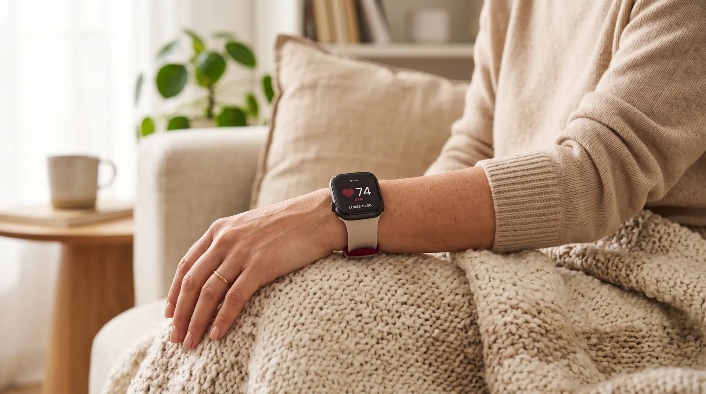

Cardiólogo en Elche · Clínica Elche Salud
Qué frecuencia cardíaca es normal en reposo, por qué se acelera sin motivo aparente y cuándo consultar

Cada vez es más frecuente: el reloj o la pulsera marcan una frecuencia cardíaca en reposo de 90, 95 o 100 latidos por minuto, sin haber hecho ejercicio ni sentir nada extraño. La pregunta que surge es siempre la misma: ¿es esto taquicardia y debería preocuparme?
Se llama taquicardia a una frecuencia cardíaca en reposo por encima de 100 latidos por minuto. En la gran mayoría de los casos tiene una causa identificable y reversible: estrés, cafeína, fiebre, deshidratación o falta de forma física.
Lo importante no es el susto puntual, sino identificar por qué ocurre. Casi siempre la causa es sencilla; en una minoría de casos conviene descartar una arritmia o un problema de tiroides.
Esta es la clasificación habitual para un adulto sentado y tranquilo, sin haber hecho esfuerzo en los minutos previos:
| Categoría | Frecuencia (lpm) | Qué significa |
|---|---|---|
| Rango habitual | 60-90 | Lo esperable en la mayoría de adultos en reposo. Por debajo de 60 puede ser normal, especialmente en personas entrenadas. |
| Alta, sin llegar a taquicardia | 90-100 | Zona límite. Un valor aislado no suele preocupar, pero si se mantiene en el tiempo merece revisar la causa. |
| Taquicardia | Más de 100 | Requiere identificar la causa. La mayoría son fisiológicas, pero conviene descartar arritmia si se repite sin motivo. |
Estas cifras se refieren a frecuencia en reposo real: sentado, tranquilo, sin haber tomado café, fumado o hecho esfuerzo en los 15-20 minutos previos a la medición.
En la mayoría de los casos se trata de taquicardia sinusal: el corazón late más rápido pero de forma regular, como respuesta lógica del cuerpo a algún estímulo. Las causas más frecuentes:
La activación del sistema nervioso simpático acelera el pulso, incluso sin que la persona note nerviosismo consciente.
El café, el té, las bebidas energéticas y el tabaco elevan la frecuencia cardíaca durante horas tras el consumo.
Por cada grado de fiebre, el pulso suele subir varios latidos por minuto. Es una respuesta normal del organismo.
Con menos volumen de sangre circulante, el corazón compensa latiendo más rápido para mantener la presión.
Si la sangre transporta menos oxígeno, el corazón acelera el ritmo para suplir la falta de aporte a los tejidos.
El exceso de hormona tiroidea acelera el metabolismo y, con él, la frecuencia cardíaca de base.
Un corazón poco entrenado necesita más latidos por minuto para bombear el mismo volumen de sangre.
Broncodilatadores, descongestionantes y algunos tratamientos para el asma pueden elevar el pulso como efecto conocido.
En una parte más pequeña de los casos, el pulso rápido en reposo no responde a ninguno de los desencadenantes anteriores. Ahí conviene pensar en:
El corazón late rápido en reposo sin causa identificable ni desencadenante claro. Es un diagnóstico que se hace tras descartar el resto de causas.
Episodios de inicio y final bruscos, con frecuencias más altas (140-200 lpm). Suelen notarse como una salva de latidos rápidos y sostenidos.
El ritmo se vuelve rápido pero también irregular y caótico. Es la causa que más interesa descartar por su relación con el riesgo de ictus.
El pulso se dispara sobre todo al ponerse de pie, no tanto tumbado. Es menos frecuente, pero se estudia si hay ese patrón postural.
Puedes ampliar la diferencia entre un pulso rápido regular y uno irregular en nuestro artículo sobre palpitaciones, y sobre la fibrilación auricular en concreto en la página dedicada a fibrilación auricular.
Los relojes y pulseras han hecho visible algo que antes pasaba desapercibido: la frecuencia cardíaca en reposo de cada noche o cada mañana. Es un dato útil, pero con dos matices importantes:
Si tu dispositivo detecta además un ritmo irregular y no solo rápido, la lectura relevante cambia: es el patrón que más nos interesa valorar. Lo tratamos con más detalle en este artículo sobre los avisos de fibrilación auricular del reloj.
En la mayoría de las personas que consultan por esto, el estudio termina con una causa sencilla y tranquilizadora. El valor de la consulta está en confirmarlo, no en asumirlo.
Consulta cardiológica en Elche. ECG, analítica y Holter 24h si es necesario para identificar la causa.